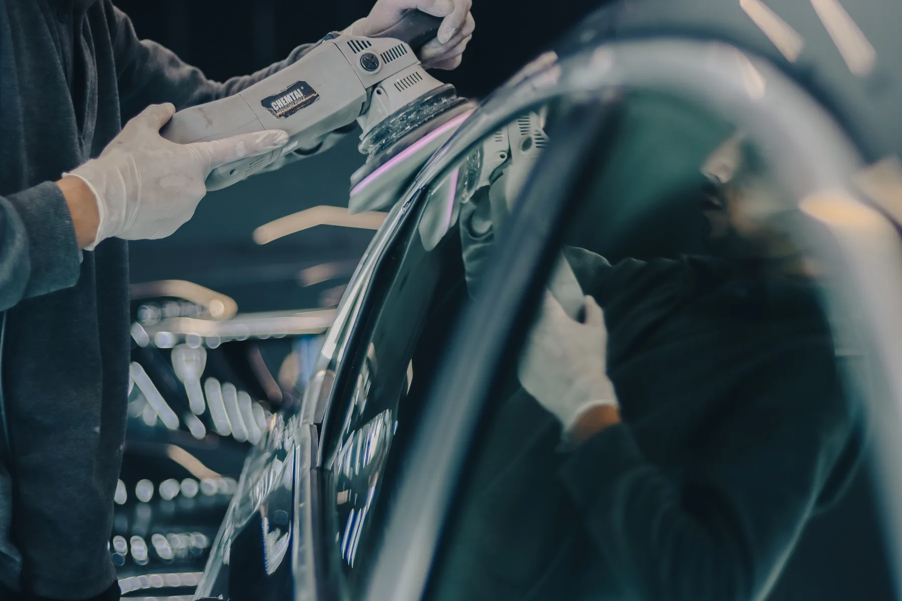
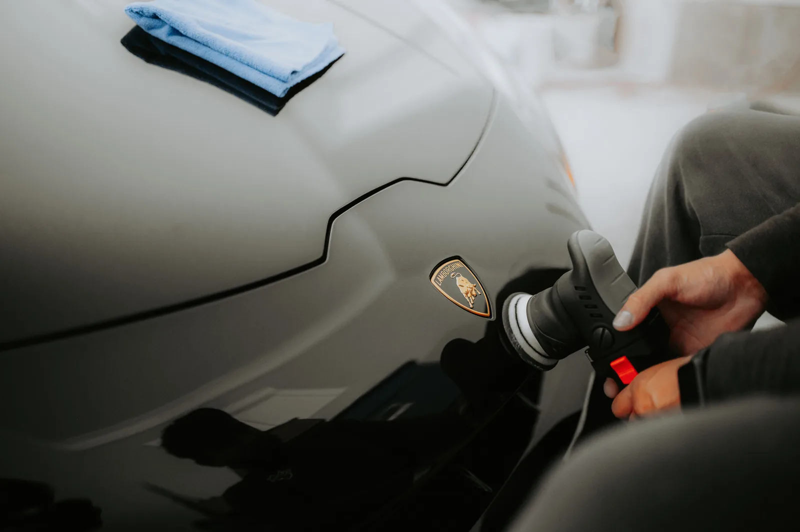
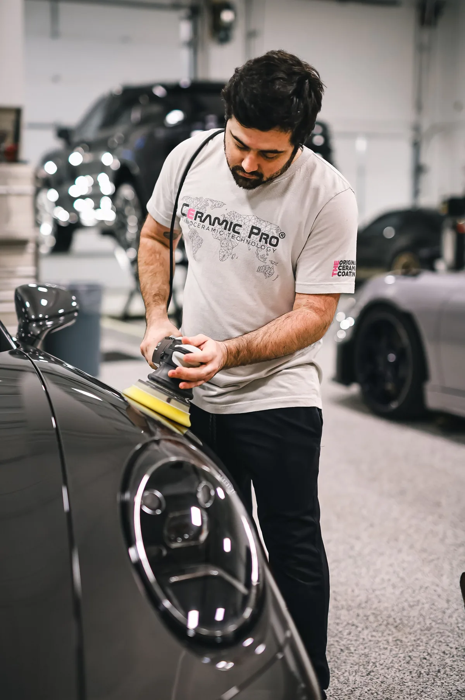

Полировка и коррекция
Убираем мелкие риски и мутность. Число этапов зависит от состояния лака.
Возвращаем лаку глубину, убираем следы времени и защищаем кузов от новых. Один автомобиль — один мастер, без потока и конвейера.

PAINT LAB / 04Проверяем толщину лака и фиксируем состояние кузова. Передвиньте ползунок, чтобы сравнить матовую поверхность и глубокий блеск.

ДО КОРРЕКЦИИПОСЛЕОсматриваем машину при правильном свете и объясняем, за что платите. Состав работ и стоимость согласуем заранее.
Убираем мелкие риски и мутность. Число этапов зависит от состояния лака.
Глубокий блеск, проще мойка и дополнительная защита от городской среды.
Деликатная очистка кожи, ткани, пластика и труднодоступных деталей.
Защищаем зоны риска от сколов. Аккуратно прячем края и стыки.
Осматриваем кузов и вместе выбираем приоритеты ухода.
Согласуем план. Фотоотчёт отправляем в удобный мессенджер.
Показываем готовую машину и объясняем, как сохранить покрытие.

Пришлите марку автомобиля и пару фото кузова — подскажем уход и сориентируем по цене.
Можно выбрать услуги выше или просто запросить осмотр.